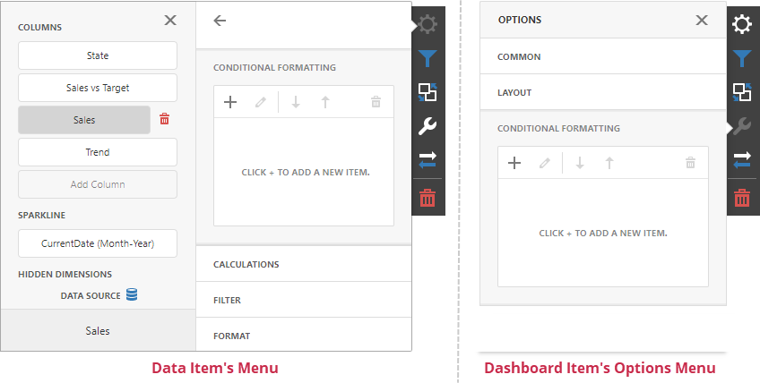

Conditional Formatting
The Web Dashboard supports conditional formatting. You can apply a custom style to data elements that satisfy a certain condition for Grid, Pivot, Chart, Scatter Chart and Card items.

Format Rules
Format rules used in conditional formatting can be categorized as follows:
- Value - Compares static values (Greater Than, Less Than, Between, etc.).
- Top-Bottom - Highlights a specific number of top/bottom values (Top N, Bottom N).
- Average - Highlights values above or below the average value.
- A Date Occurring - Highlights date-time values that are within a specified interval.
- Expression - Uses complex conditions to apply formatting. You can also pass dashboard parameters to expressions.
- Icon and Color Ranges - Display a specific icon based on a value range. You can select a predefined set of icons or apply a specific icon to each range.
- Color Ranges - Apply specific colors to different value ranges. You can select a predefined set of colors or use custom appearance settings to highlight values within specified ranges.
- Gradient Ranges - Apply formatting using gradient color scales.
- Bar - Visualizes numeric values as bars. You can also color bars corresponding to positive and negative values using different colors.
- Bar Color Ranges - Visualize numeric values as bars. Values within a range display a specific color.
- Bar Gradient Ranges - Visualize numeric values as bars. Values within a range display a specific bar gradient.
Format conditions that can be applied to different data item types are as follows:
- numeric
- Value
- Top-Bottom
- Average
- Expression
- Icon Ranges
- Color Ranges
- Gradient Ranges
- Bar
- Bar Color Ranges
- Bar Gradient Ranges
- string
- Value (with the condition type set to Equal To, Not Equal To or Text that Contains)
- Expression
- date-time
- Value
- A Date Occurring (for dimensions with a continuous date-time group interval)
- Expression
- Icon and Color Ranges
- Color Ranges
- Gradient Ranges
- Bar
- Bar Color Ranges
- Bar Gradient Ranges
Create a Format Rule
To create a format rule, open the Conditional Formatting section in the dashboard item's Options menu or in the data item menu. Click "+" to add a new format rule:

Specify the data item/card used to calculate a condition in the Common section. You can also create a format rule for one data item and apply different settings to the other data item.
Select a format rule type from the list to open its settings.

Select a condition from the list and specify its settings in the Condition section. Available settings depend on the selected format rule.

Specify additional settings in the Miscellaneous section. For example, you can specify the intersection level for the Pivot or apply the current rule to a row in the Grid.
Edit a Format Rule
To edit a format rule, select the rule and click Edit (the  icon).
icon).

Click Delete (the  icon) to delete the selected format rule.
icon) to delete the selected format rule.
When you edit a format rule, you can enable or disable the rule in the Miscellaneous section.

Other settings in the Miscellaneous section depend on the selected dashboard item.
Appearance Settings
The format rule menu's Condition section contains appearance settings.
For Grid, Pivot, and Card items, you can configure and customize the current format condition appearance settings:
Choose a predefined background color or font in the Appearance tab.

Add a predefined icon in the Icons tab.

Chart and Scatter Chart items have a predefined palette and a custom palette. Click a color chip in the Custom Color palette to set a new custom color. You can pick any color using the RGB or HSB color model in the invoked color picker.

You can change generated colors for the Range format rules:

Dashboard Item Format Rule Specifics
See the following sections for more information about specific format settings for dashboard items: